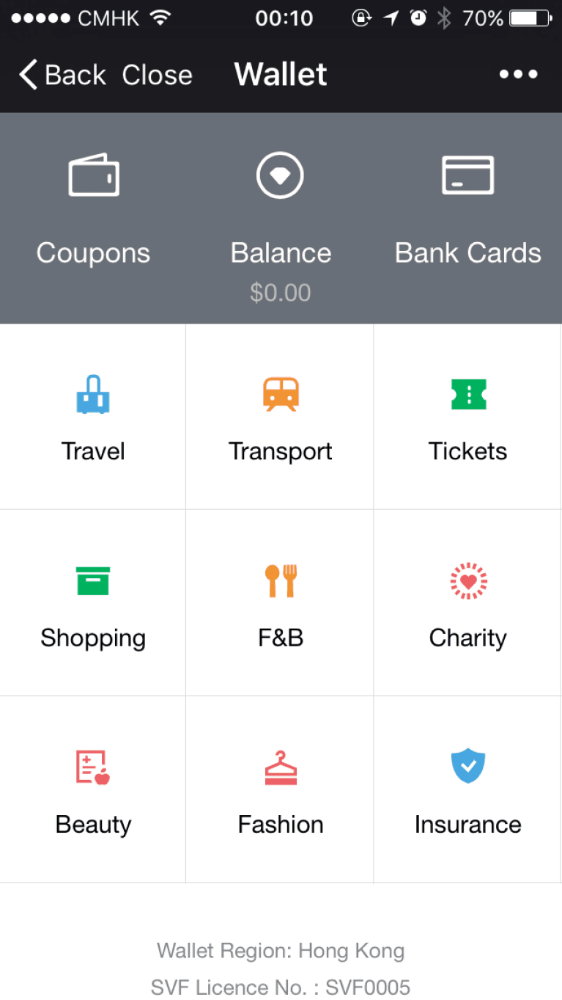
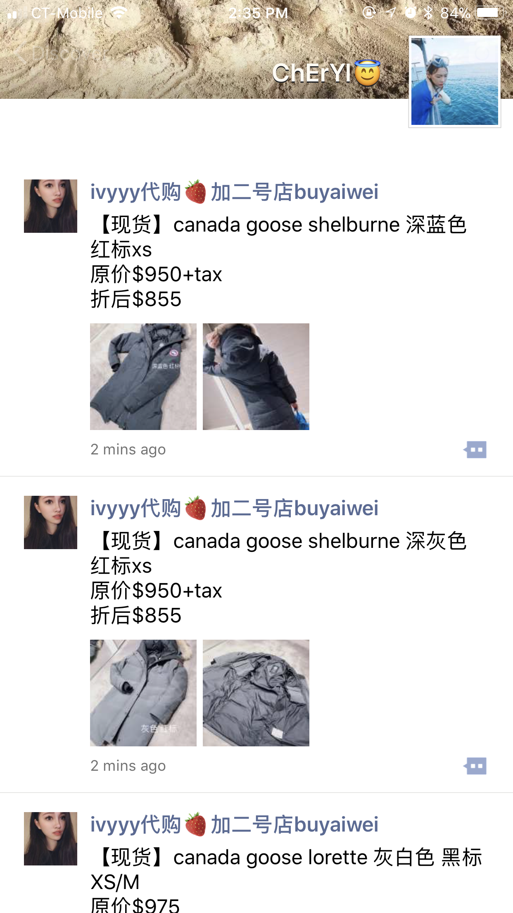
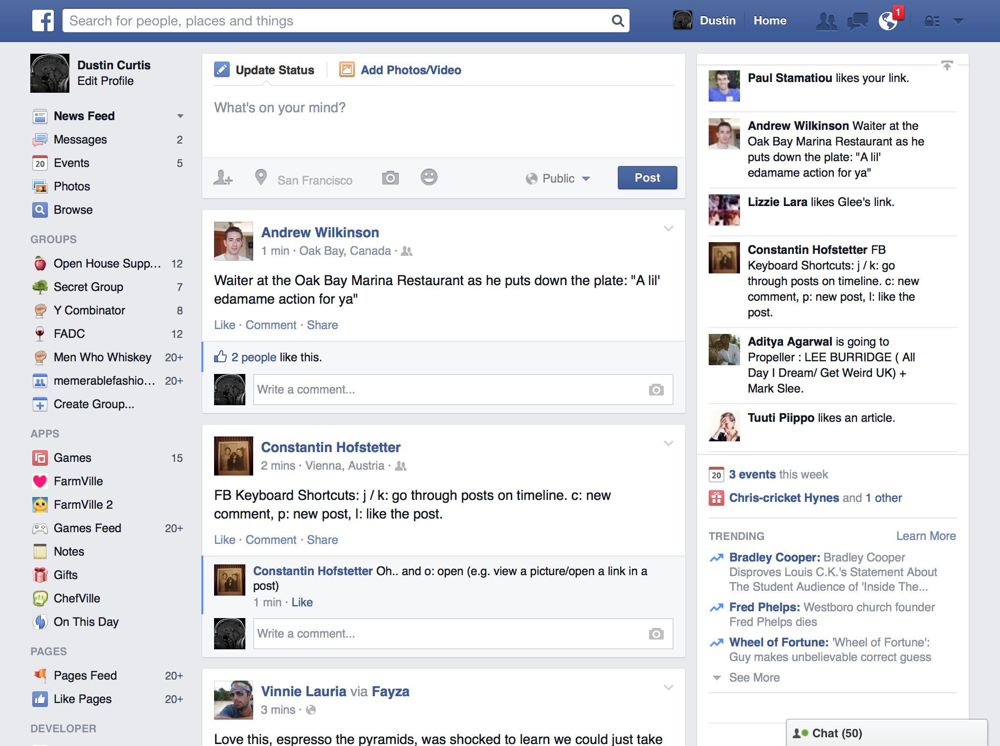

Differences In Social Media
The most remarkable difference between Chinese and American social media is the population of users. Accordingly, “Chinese population is really active on these networks and use all of them, as they spend about 40% of their 25 hours/week online on social networks.” The enormous population promoted more content and more interaction online. Meanwhile, as using social networks for commercial purposes becomes more popular, Chinese consumers always write reviews and look for reviews of products they are interested on social media like Weibo. Moreover, Chinese social media, especially Wechat, has even become an incredibly large platform for small companies to promote and sell products.
 
Besides the dissimilarity of the size of population, censorship in China is much more sensitive than in the United States. There are lots of topics that are not supposed to be talked about and will be immediately deleted if people mentioned them. Situations like this usually happens towards political issues, or negative influences created by well-known celebrities. Also, foreign websites like Youtube, Instagram and Facebook are all prohibited in China, which means Chinese public cannot reach these websites as easily as Americans. While in the United States, people can say whatever they want because of the liberty of speech.
